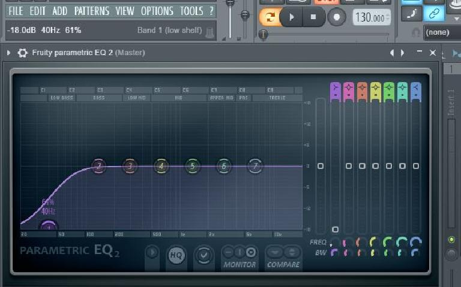
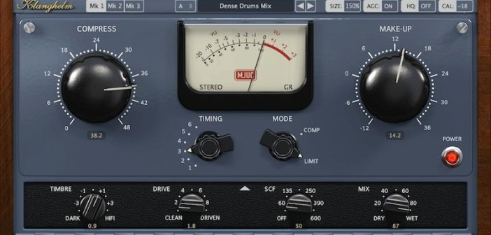

Enfin notre instrumentale terminer, nous voila au mixage.
Pour moi le mixage est un milieu très complexe que je maitrise mal, mais tous les jours j'en apprend un peu plus.
Dans le mixage, chaque instrument ainsi que chaque drums doit-être mixer, ceci est important pour que chaque instrument sonne le mieu possible.
En moyenne dans le mixage on utilise plus souvent la compression ainsi que l'equalizeur.
La compression est compliquer a expliquer mais je vais tenter d'expliquer au mieu, celui-ci sert a mettre toutes les frequences de l'instrument au mêmes niveau, il sert aussi a regler le ratio et "l'attack" de l'instrument.
l'equalizeur lui, sert a enlever des frequences ou en amplifier, ce qui est utile quand un instrument est de mauvaise qualité par exemple.
voici encore une fois, des exemple de plugin de mixage trouvable sur internet :
 